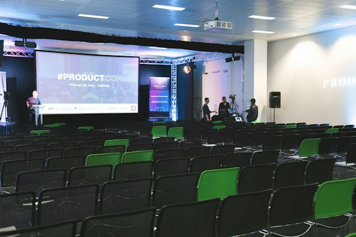
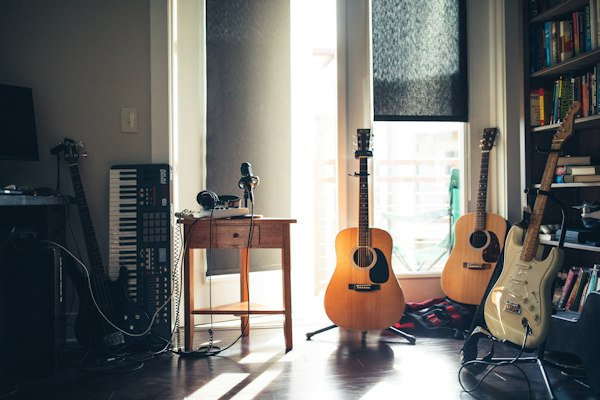

Lingkungan Belajar Berkarakter, Cerdas, dan Siap Berprestasi
SMA Nusantara Unggul menghadirkan pembelajaran yang seimbang antara akademik, pembentukan karakter, dan pengembangan bakat siswa untuk mempersiapkan langkah menuju masa depan.

Suasana lingkungan sekolah yang bersih, kondusif, dan mendukung aktivitas belajar.
Informasi Pendaftaran (PPDB)
Petunjuk alur pendaftaran, syarat berkas, dan jadwal penerimaan.
Lihat Informasi PPDB ›Kegiatan & Pembelajaran
Informasi seputar kurikulum, program akademik, dan kegiatan ekstrakurikuler.
Jelajahi Keunggulan ›Fasilitas & Pendampingan
Sarana pendukung kegiatan belajar mengajar di ruang kelas dan laboratorium.
Lihat Fasilitas ›Mengapa Memilih SMA Nusantara Unggul?
Komitmen kami dalam menghadirkan pengalaman belajar yang berkualitas dan seimbang.
Kurikulum Berbasis STEAM
Pembelajaran terpadu sains, teknologi, rekayasa, seni, dan matematika untuk mengasah logika berpikir kritis serta kreativitas siswa.
Tenaga Pendidik Berdedikasi
Guru-guru tersertifikasi yang berdedikasi mendampingi dan membimbing siswa dalam proses akademik dan pembentukan karakter.
Pembentukan Karakter & Disiplin
Pembiasaan sikap etis, religiusitas, kedisiplinan, dan rasa tanggung jawab sosial melalui kegiatan harian di sekolah.
Pendampingan Belajar & Karir
Pendampingan terarah bagi siswa untuk mengeksplorasi minat akademik serta persiapan menuju jenjang pendidikan berikutnya.

"Pendidikan berlandaskan integritas dan kedisiplinan adalah kunci membuka potensi setiap siswa."
Sekilas Tentang SMA Nusantara Unggul
SMA Nusantara Unggul berkomitmen menciptakan lingkungan belajar yang nyaman, aktif, dan mendukung perkembangan setiap siswa. Kami mendorong siswa untuk mengembangkan pengetahuan, kreativitas, karakter, serta keterampilan yang dibutuhkan untuk menghadapi masa depan.
Dengan dukungan tenaga pendidik yang berdedikasi dan fasilitas belajar yang memadai, sekolah ini menjadi tempat bagi siswa untuk membina kedisiplinan, mengeksplorasi minat akademik maupun non-akademik, dan mempersiapkan diri menuju jenjang pendidikan berikutnya.
Menjadi sekolah menengah yang membentuk siswa cerdas, berkarakter mulia, dan siap melangkah ke masa depan.
Menyelenggarakan proses pembelajaran aktif, membina potensi siswa, serta membangun budaya beretika.
Fasilitas Belajar Siswa
Fasilitas sekolah yang disediakan untuk mendukung kegiatan belajar dan praktikum siswa.

Laboratorium Komputer
Wadah pembelajaran teknologi dan pemrograman dengan perangkat komputer serta akses internet yang memadai.

Perpustakaan Sekolah
Ruang baca yang nyaman dengan koleksi buku pelajaran, ensiklopedia, literatur digital, dan referensi umum.

Laboratorium IPA Terpadu
Fasilitas praktikum Fisika, Kimia, dan Biologi yang dilengkapi peralatan eksperimen dasar untuk menunjang sains.

Gedung Olahraga & Seni
Sarana olahraga serbaguna serta ruang kegiatan seni untuk mendukung aktivitas kebugaran dan ekspresi siswa.
Kegiatan & Kabar Sekolah
Ringkasan publikasi kegiatan dan fasilitas sekolah (Kontak & Konten Contoh).

Pameran Karya Pembelajaran Siswa Terpadu
Penataan ruang galeri sekolah dalam rangka menampilkan hasil proyek terpadu dan karya seni siswa.

Persiapan Fasilitas Sosialisasi Perguruan Tinggi
Pemanfaatan fasilitas auditorium untuk rangkaian pemaparan program bimbingan studi lanjut siswa.

Peningkatan Sarana Ruang Musik & Kesenian
Penyempurnaan perlengkapan ruang seni musik untuk mendukung kegiatan ekstrakurikuler siswa.